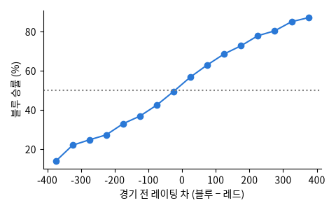

Leaguepedia (lol.fandom.com) 의 프로 경기 기록을 GPTilt 가 정리해 Hugging Face 에 올린 것 (gptilt/lol-esports-matches). 한 판마다 날짜 · 대회 · 두 팀 · 이긴 팀 · 양 팀 챔피언 5개 · 밴 · 경기 시간. 라이선스 CC BY-SA 3.0

| datetime_utc | region | team_blue | team_red | winner | picks_blue | picks_red | gamelength |
|---|---|---|---|---|---|---|---|
| 2025-10-19 16:24:00 | Americas | ÉanDG | Oreiudos Esports | ÉanDG | Renekton, Jarvan IV, Xerath, Draven, Rell | Rumble, Xin Zhao, Hwei, Sivir, Poppy | 31:21 |
| 2026-05-14 10:16:00 | Korea | Kiwoom DRX | KT Rolster | KT Rolster | Renekton, Xin Zhao, Aurora, Ezreal, Bard | Jayce, Pantheon, Annie, Sivir, Karma | 24:06 |
| 2026-06-04 15:12:00 | EMEA | Movistar KOI Fénix | UCAM Esports | Movistar KOI Fénix | Sion, Wukong, Viktor, Lucian, Milio | Rumble, Pantheon, Orianna, Kalista, Renata Glasc | 35:19 |
| 2025-10-05 05:53:00 | Korea | OKSavingsBank BRION Academy | T1 Esports Academy Rookies | OKSavingsBank BRION Academy | Rumble, Xin Zhao, Ryze, Xayah, Rakan | Galio, Vi, Taliyah, Sivir, Alistar | 34:28 |
| 2026-05-22 22:08:00 | Brazil | RAMPAGE (Brazilian Team) | Vasco E-Sports | Vasco E-Sports | Sion, Xin Zhao, Ryze, Lucian, Milio | Olaf, Nocturne, Aurora, Draven, Nautilus | 28:40 |
| 2025-04-27 11:38:00 | EMEA | Zero Tenacity | Fajnie Mieć Skład | Zero Tenacity | Camille, Maokai, Orianna, Tristana, Amumu | Volibear, Sejuani, Ambessa, Jhin, Rakan | 30:57 |
| 열 | 종류 | 빈칸 | 고유값 수 | 범위 · 대표값 |
|---|---|---|---|---|
| datetime_utc | 글자 · 범주 | 0 | 130,624 | 가장 흔한 값: 2013-08-20 07:00:00 (0.0%) |
| region | 글자 · 범주 | 0 | 23 | 가장 흔한 값: EMEA (19.9%) |
| team_blue | 글자 · 범주 | 0 | 4409 | 가장 흔한 값: Invictus Gaming (0.6%) |
| team_red | 글자 · 범주 | 0 | 4450 | 가장 흔한 값: Invictus Gaming (0.6%) |
| winner | 글자 · 범주 | 0 | 4002 | 가장 흔한 값: EDward Gaming (0.6%) |
| picks_blue | 글자 · 범주 | 0 | 130,349 | 가장 흔한 값: Rumble, Sejuani, Yone, Xayah, (0.0%) |
| picks_red | 글자 · 범주 | 0 | 131,825 | 가장 흔한 값: Renekton, Sejuani, Azir, Xayah (0.0%) |
| gamelength | 글자 · 범주 | 0 | 2840 | 가장 흔한 값: 29:08 (0.2%) |
늘 50% 보다 조금 높다: 블루 진영 이점
레이팅이 높은 팀이 더 자주 이긴다
| ① 한 행 | 경기 한 판 |
| ② 입력 X | 두 팀의 그 경기 전까지 실력 (Elo 레이팅) · 양 팀이 고른 챔피언 10개 |
| ③ 출력 y | 블루 팀이 이기나 (확률) |
| ④ 평가지표 | 정확도, 로그 손실 |
| ⑤ 기준선 | 늘 블루 승 (약 53%) |
문제를 정할 때 처음 채워 보는 칸들입니다. 여기서 끝이 아니라, 시험 데이터를 어떻게 나눌지 · 틀렸을 때 손해가 얼마인지 · 예측 시점에 정말 알 수 있는 값인지 같은 칸을 더 붙일수록 좋은 문제가 됩니다.
always blue accuracy 52.9% log loss 0.6915 higher Elo wins accuracy 62.2% champions only accuracy 53.2% log loss 0.6905 Elo only accuracy 62.7% log loss 0.6442 Elo + champions accuracy 62.6% log loss 0.6439
누가, 왜, 어떻게 만든 데이터인지 직접 확인해 보세요.
프로젝트 주제를 고를 때 참고하세요 (일반적인 예시).